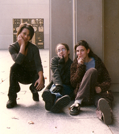

Think Like a Teenager
By Barbara Shoup
I never set out to be a writer of Young Adult fiction. Years of teaching high school students had convinced me that teenagers like “real” books, not condescending romantic fluff or preachy stories meant to improve their morals—which is what I thought YA novels were. My serious teenage readers loved books like Catcher in the Rye, A Separate Peace and To Kill a Mockingbird, and when I was working on Wish You Were Here, a novel that explores the after-effects of divorce on 17 year-old Jackson Watt, I hoped they’d love it, too. But if pressed to name the audience I was writing for, I’d have said divorced parents who need to understand what divorce feels like from a kid’s point of view. So when my agent read the manuscript and observed that it seemed perfect for the YA market, I felt… well, put off by the idea. I was quite wrong about YA fiction as it turned out. Entering that world when Wish You Were Here was published by Hyperion Books for Children in 1994, I came to know the work of YA authors Chris Crutcher, Laurie Halse Anderson, Gary Paulson and others whose books are every bit as serious as those written for adults, honestly, unflinchingly confronting real, complex issues of the human heart. Some years later, having published two more novels for young adults, Stranded in Harmony and the recent Vermeer’s Daughter, I’m still not sure why some novels with teenage protagonists are marketed as YA’s and others as books for adults. I don’t think I ever will be. But any writer who wants to write for teenagers will benefit from considering what the books young people love have in common.
The main character in a YA novel is always a young person still being shaped by life in the most fundamental ways. Still grieving over his parents’ divorce, Wish You Were Here’s Jackson Watt’s struggle to find his own place in the world is complicated by the disappearance of his best friend, his mother’s marriage, and relationships with two girls—one he loves and one who desperately loves him. Lucas Cantrell, in Stranded in Harmony, feels caught in the life everyone has planned for him until he strikes up a friendship with a mysterious new woman in town who give him the courage to take the first step into what his real life will be. In Vermeer’s Daughter, Carelina Vermeer, the plain, stubborn, dreamy daughter in a contentious household, develops a special relationship with her father, a painter, who sets her on a path into the wider world of art.
Young adult novels are always coming of age stories, driven by the ultimate task of every adolescent: self-discovery. As in any novel, the plot is driven by a general, overarching question. That question is addressed through a series of scenes that generate specific questions in the reader’s mind as the story proceeds and compel him to keep turning the pages. For example, the overarching question in Stranded in Harmony is, What happens to a teenage boy who feels hemmed in by the expectations of his family and friends when he meets a woman who recognizes his yearning and sees all he might become? Leap-frogging beneath it, there are smaller, more specific questions like, Who is the woman on the ridge? Will she help Lucas with his uncle? Can he keep his relationship with her a secret from his girlfriend?
Note that the questions driving the plot are addressed through a series of scene. This is true of all good novels, and especially true if you want to write books teenagers will read. Good scenes present evidence objectively through detail and dialogue, giving the reader the freedom and pleasure to come to his own conclusions about what to think and how to feel. In Wish You Were Here, I wanted to show the moment that Jackson began to understand that his friend, Brady, was arrogant and irrational, nowhere near as wise as Jackson had believed him to be. So I created a scene in which Brady argued with his father and then just lost it, randomly destroying objects in his father’s house, eventually zeroing in on his dad’s beloved music collection, methodically ripping the tape from each cassette until “the room was covered with what looked like brown ticker tape.” “I felt paralyzed,” Jackson observes, witnessing it, “exactly like I used to feel when I was little and something I was watching on TV suddenly turned scary. Just get up and turn it off, I’d tell myself. But I never did. I’d stare at the screen, all the while a dark place opening wider and wider inside me, just like it was now.”
There’s a raw, wondering tone to good YA novels, the sense of life being lived now. “When did I change?” reflects Lucas in the beginning of Stranded in Harmony. “When did I quit believing that there was a whole world out there, just waiting for me to step into it? When it happened, why didn’t I notice it?” A chance meeting with a woman painter who treats her kindly causes Carelina to marvel, “…for the first time in my life, I felt as if I were the center of the universe. Their universe of paint and cakes and tea and flowers.”
Such thoughts are endearing, but a realistic adolescent character must also reflect the self-absorption, lack of experience and skewed perspective quintessential to that age. In fact, YA plots hinge on these traits that create tension in young people’s lives and often cause them to behave badly and make terrible mistakes. Set adrift, desperately trying to figure out what to trust and who to be, Jackson has sex with a girl he doesn’t love, drinks, experiments with marijuana. Carelina causes a beloved sister pain when she lashes out against their strict grandmother.
The trick is in creating a self-absorbed, difficult teenage character—who is also lovable. When Lucas thinks his girlfriend is pregnant, he’s mean to her, selfishly obsessing about the impact on his own life, his future. Yet readers root for everything to turn out well for him because they are privy to memories that bring insight to the relationship and thoughts that reflect his guilt and confusion. They see him in action with others, where his best self is revealed. Over the course of the book, they come to their conclusions about him much as they come to conclusions about real people, through a cumulative series of encounters that clarify and refine their sense of who he really is.
All this is about craft—and craft always matters. But it isn’t the only thing that matters in writing for young adults. “Hold on to sixteen as long as you can,” sang rock musician John Mellencamp—and that is at the crux of what all good YA writers do. In fact, they not only remember what it is like to be young, they are incapable of forgetting the terrible, wonderful yearning of that age. They can count on that sixteen-year-old who lives eternally inside them to recognize and censor an adult voice that creeps between the lines, nagging, bossing kids around, trying to improve them. It’s quick to recognize phoniness, too—reminding him why Holden Caulfield remains one of literature’s great adolescents. Like Steven King, who remains terrified of the closed closet door of his childhood, the best young adult authors write from a time in their own lives that’s still emotionally alive for them, a time they’re still trying to understand by way of the teenage characters they create.
Some years ago, I visited a class of high school juniors who had read Stranded in Harmony, and we had a spirited discussion about the book. There was a girl in the back of the room who sat quietly, her head bent, and I wondered if she was even listening. Then near the end of the period she raised her hand. “That part when he thought Sara was pregnant?” she said, almost in a whisper. “Well I have a baby and when I read that part it made me see how my boyfriend felt when he found out. I didn’t really know what it was like for him before I read this book.” The bell rang and she was gone before I could thank her for the great gift she had given me in gathering her courage to tell me how my book had made a difference in her life. And I thought, for the millionth time, that what matters most writing YA’s is to bring adolescent characters fully alive on the page, let them grapple with the important, always ambiguous human questions, and in so doing help young readers imagine new, better ways to live their own, real lives.
Published in Writer Magazine.
BARBARA'S BLOG

Read thoughts on books, authorship, teaching, and life on Barbara's blog.
BOOKS

Browse Barbara's books or read her essays.
CONTACT

Want to know more? Find media, press and publicity information here.
© Barbara Shoup 2012